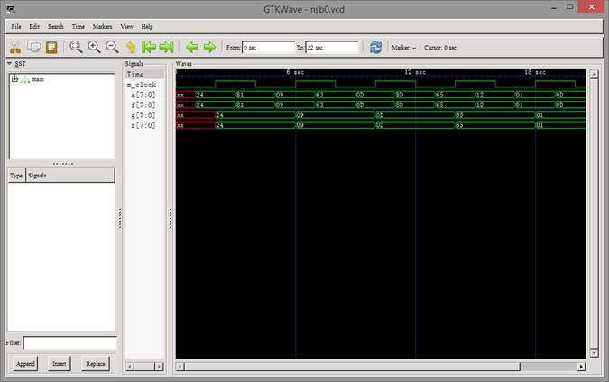
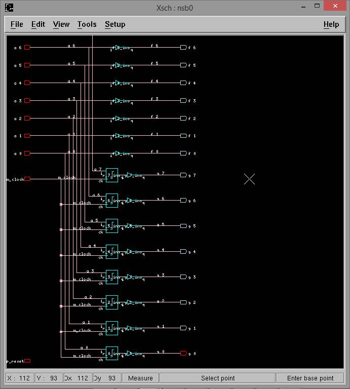
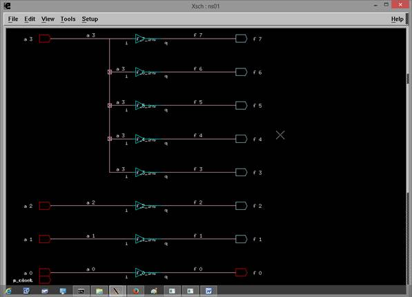
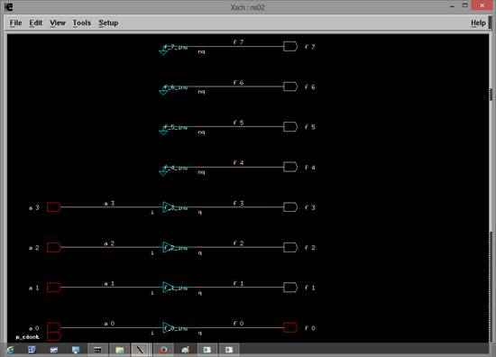

NSL Tutorial: Basic structure of NSL
NSL describes the logic circuit as set of modules. The structure of a module is shown as following. Each definitions and/or descriptions can be eliminate but the order of the definitions should not be altered.
declare module_name {
io_facility_defenitions
}
module module_name {
internal_facility_defenitions
core_behavior
control_behavior
}
Input and output of modules use
external terminals:
|
Direction |
Terminal definitoin command |
Description |
|
Input |
input |
Data input terminal |
|
Output |
output |
Dta output terminal |
|
Bi-directional |
inout |
Data bi-directional terminal |
|
Input |
func_in |
Control input terminal |
|
Output |
func_out |
Control output terminal |
NSL has following facilities:
|
Facility definition |
Description |
|
wire |
Internal data terminal |
|
reg |
Register |
|
mem |
memory |
|
submodule_name |
Submodule instance definition |
|
func_self |
Control internal terminal |
|
proc_name |
Procedure name declaration |
|
state_name |
State name declaration |
|
func |
Function behavior |
|
proc |
Procedure behavior |
|
state |
State behavior |
NSL has following behavioral
definitions:
|
Operation |
Description |
|
Unit operation |
Transfer a value to terminal, write to register, write to memory, state transition, activate control terminal, procedure call |
|
{ } |
Parallel activation of unit oprations. |
|
seq |
Sequential activation of unit oprations. |
|
for |
Loop control. Only valid within seq block |
|
while |
Loop control. Only valid within seq block |
|
goto |
Execution control. Only valid within seq block |
|
alt |
Conditional activation of unit operations with priority. |
|
any |
Conditional activation of unit operations without priority. (All of the matched operation will be activated in parallel) |
|
if |
Conditional activation of a unit operation. |
NSL operators:
|
Operator |
Description |
Operator |
Description |
|
~ |
Nagate |
| |
OR |
|
signal[n] |
Bit extraction |
^ |
EXOR |
|
signal[n:m] |
Bits extraction |
& |
AND |
|
| |
Bitwise OR |
{signal , signal} |
Bit concatination |
|
& |
Bitwise AND |
+ |
Add |
|
^ |
Bitwise EXOR |
- |
Subtract |
|
n#(signal_name) |
Sign extention |
n'(signal_name) |
unsgined extention |
|
== |
Equal |
!= |
Not equal |
|
<= |
Less equal |
>= |
Greater equal |
|
< |
Less than |
> |
Greater than |
NSL provide bit operators and you can make bit twisting logic as Example-nsb0.
Example-nsb0 data transfer with registers and wires.
declare
nsb0 {
input a[8];
output f[8], g[8];
}
module
nsb0 {
wire b[8];
reg r[8];
b = a;
r := a;
f = b;
g = r;
}
The registers will sample the input data at the
rising edge of the master clock which is usually m_clock in NSL.
The behavior of this circuit is shows on the
following figure.

The
corresponding circuit diagram is like the following picture.

The usage of sign extension operator is shown in Example-NS01.
Example-NS01 Sign extension.
declare
NS01 {
input
a[4];
output
f[8];
}
module
NS01 {
f=8#(a);
}

If you need to adjust bit width
without sign extension, then use concatination as Example-NS02.
Example-NS02 Bit extentsion without sign extension
declare
NS02 {
input
a[4];
output
f[8];
}
module
NS02 {
f=8'(a);
}

Now
we will start the tutorial exercises. Open a terminal window. Then we need to
change current directory before starting the tutorials:
# cd; cd NSL-1
4.
alt block
5.
any block
6.
seq block
10.
Submodules
12.
Register
13.
Memory
14.
Procedure
15.
State Transision